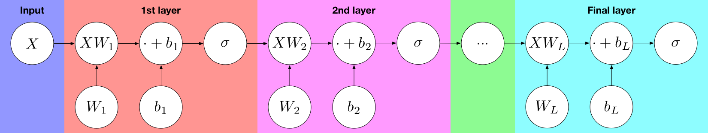

Deep Learning From Scratch V: Multi-Layer Perceptrons
This is part 5 of a series of tutorials, in which we develop the mathematical and algorithmic underpinnings of deep neural networks from scratch and implement our own neural network library in Python, mimicing the TensorFlow API. Start with the first part: I: Computational Graphs.
- Part I: Computational Graphs
- Part II: Perceptrons
- Part III: Training criterion
- Part IV: Gradient Descent and Backpropagation
- Part V: Multi-Layer Perceptrons
- Part VI: TensorFlow
Multi-layer perceptrons
Motivation
Many real-world classes that we encounter in machine learning are not linearly separable. This means that there does not exist any line with all the points of the first class on one side of the line and all the points of the other class on the other side. Let's illustrate this with an example.
# Create two clusters of red points centered at (0, 0) and (1, 1), respectively.
red_points = np.concatenate((
0.2*np.random.randn(25, 2) + np.array([[0, 0]]*25),
0.2*np.random.randn(25, 2) + np.array([[1, 1]]*25)
))
# Create two clusters of blue points centered at (0, 1) and (1, 0), respectively.
blue_points = np.concatenate((
0.2*np.random.randn(25, 2) + np.array([[0, 1]]*25),
0.2*np.random.randn(25, 2) + np.array([[1, 0]]*25)
))# Plot the red and blue points
plt.scatter(red_points[:,0], red_points[:,1], color='red')
plt.scatter(blue_points[:,0], blue_points[:,1], color='blue')As we can see, it is impossible to draw a line that separates the blue points from the red points. Instead, our decision boundary has to have a rather complex shape. This is where multi-layer perceptrons come into play: They allow us to train a decision boundary of a more complex shape than a straight line.
Computational graph
As their name suggests, multi-layer perceptrons (MLPs) are composed of multiple perceptrons stacked one after the other in a layer-wise fashion. Let's look at a visualization of the computational graph:

As we can see, the input is fed into the first layer, which is a multidimensional perceptron with a weight matrix $W_1$ and bias vector $b_1$. The output of that layer is then fed into second layer, which is again a perceptron with another weight matrix $W_2$ and bias vector $b_2$. This process continues for every of the $L$ layers until we reach the output layer. We refer to the last layer as the output layer and to every other layer as a hidden layer.
an MLP with one hidden layers computes the function
$$\sigma(\sigma(X \, W_1 + b_1) W_2 + b_2) \,,$$
an MLP with two hidden layers computes the function
$$\sigma(\sigma(\sigma(X \, W_1 + b_1) W_2 + b_2) \, W_3 \,,$$
and, generally, an MLP with $L-1$ hidden layers computes the function
$$\sigma(\sigma( \cdots \sigma(\sigma(X \, W_1 + b_1) W_2 + b_2) \cdots) \, W_L + b_L) \,.$$
Implementation
Using the library we have built, we can now easily implement multi-layer perceptrons without further work.
# Create a new graph
Graph().as_default()
# Create training input placeholder
X = placeholder()
# Create placeholder for the training classes
c = placeholder()
# Build a hidden layer
W_hidden = Variable(np.random.randn(2, 2))
b_hidden = Variable(np.random.randn(2))
p_hidden = sigmoid(add(matmul(X, W_hidden), b_hidden))
# Build the output layer
W_output = Variable(np.random.randn(2, 2))
b_output = Variable(np.random.randn(2))
p_output = softmax(add(matmul(p_hidden, W_output), b_output))
# Build cross-entropy loss
J = negative(reduce_sum(reduce_sum(multiply(c, log(p_output)), axis=1)))
# Build minimization op
minimization_op = GradientDescentOptimizer(learning_rate=0.03).minimize(J)
# Build placeholder inputs
feed_dict = {
X: np.concatenate((blue_points, red_points)),
c:
[[1, 0]] * len(blue_points)
+ [[0, 1]] * len(red_points)
}
# Create session
session = Session()
# Perform 100 gradient descent steps
for step in range(1000):
J_value = session.run(J, feed_dict)
if step % 100 == 0:
print("Step:", step, " Loss:", J_value)
session.run(minimization_op, feed_dict)
# Print final result
W_hidden_value = session.run(W_hidden)
print("Hidden layer weight matrix:\n", W_hidden_value)
b_hidden_value = session.run(b_hidden)
print("Hidden layer bias:\n", b_hidden_value)
W_output_value = session.run(W_output)
print("Output layer weight matrix:\n", W_output_value)
b_output_value = session.run(b_output)
print("Output layer bias:\n", b_output_value)
# Visualize classification boundary
xs = np.linspace(-2, 2)
ys = np.linspace(-2, 2)
pred_classes = []
for x in xs:
for y in ys:
pred_class = session.run(p_output,
feed_dict={X: [[x, y]]})[0]
pred_classes.append((x, y, pred_class.argmax()))
xs_p, ys_p = [], []
xs_n, ys_n = [], []
for x, y, c in pred_classes:
if c == 0:
xs_n.append(x)
ys_n.append(y)
else:
xs_p.append(x)
ys_p.append(y)
plt.plot(xs_p, ys_p, 'ro', xs_n, ys_n, 'bo')As we can see, we have learned a rather complex decision boundary. If we use more layers, the decision boundary can become arbitrarily complex, allowing us to learn classification patterns that are impossible to spot by a human being, especially in higher dimensions.
Recap
Congratulations on making it this far! You have learned the foundations of building neural networks from scratch, and in contrast to most machine learning practitioners, you now know how it all works under the hood and why it is done the way it is done.
Let's recap what we have learned. We started out by considering computational graphs in general, and we saw how to build them and how to compute their output. We then moved on to describe perceptrons, which are linear classifiers that assign a probability to each output class by squashing the output of $w^Tx+b$ through a sigmoid (or softmax, in the case of multiple classes). Following that, we saw how to judge how good a classifier is - via a loss function, the cross-entropy loss, the minimization of which is equivalent to maximum likelihood. In the next step, we saw how to minimize the loss via gradient descent: By iteratively stepping into the direction of the negative gradient. We then introduced backpropagation as a means of computing the derivative of the loss with respect to each node by performing a breadth-first search and multiplying according to the chain rule. We used all that we've learned to train a good linear classifier for the red/blue example dataset. Finally, we learned about multi-layer perceptrons as a means of learning non-linear decision boundaries, implemented an MLP with one hidden layer and successfully trained it on a non-linearly-separable dataset.
Next steps
The upcoming sections will be focused on providing hands-on experience in neural network training. Continue with the next part: VI: TensorFlow